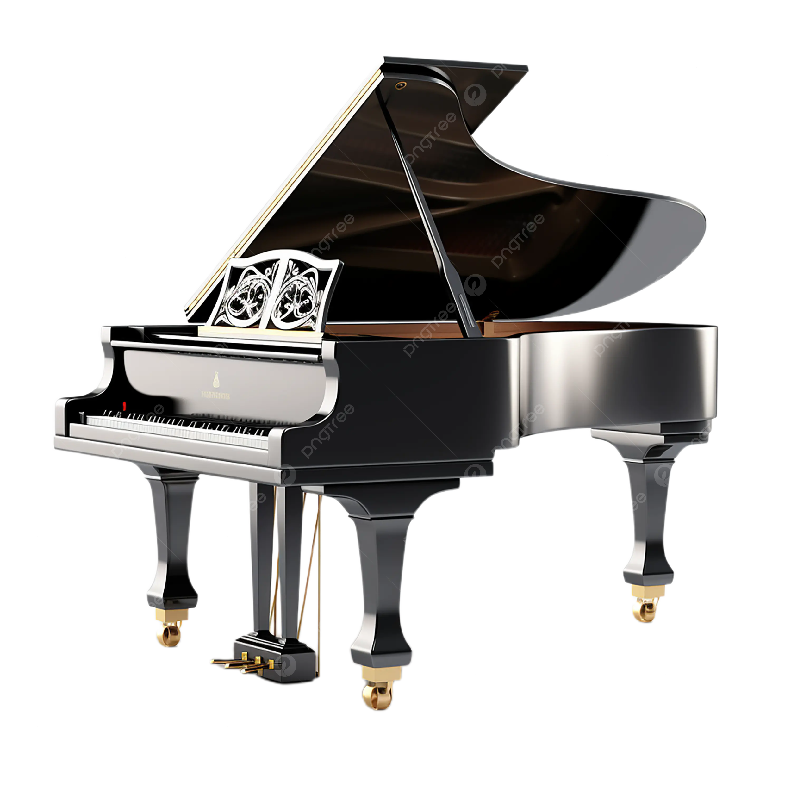
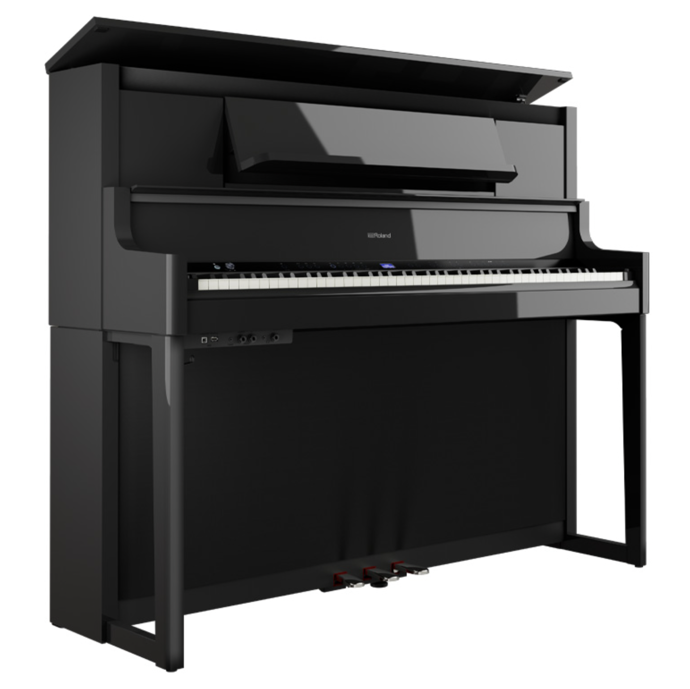

Lịch sử ra đời
Những chiếc Piano cổ điển hay còn gọi thông thường là piano cổ điển ngày nay được xây dựng trực tiếp từ những chiếc đàn clavico clavecin (harpsichord) từ khoảng thế kỷ 16 và 17. Khoảng năm 1700, Bartolomeo Cristofori đã thử tạo ra một chiếc đàn harpsichord mà có thể biểu hiện âm nhạc một cách truyền cảm hơn, và đã tạo ra một bộ máy mà các búa gõ vào các dây, khác với đàn harpsichord là dùng quill (dụng cụ gảy đàn bằng ống lông) để gảy. Một đặc trưng lớn khác ở đàn piano thời đầu của ông là cơ cấu búa thoát, nó khiến cho búa tách rời khỏi phím một khi các nốt được đánh lên, và rồi chơi lại ở một vận tốc khác hẳn, làm thay đổi hẳn sự biểu cảm của chính các nốt phím đó. Những chiếc piano đầu tiên của Critofori vẫn còn chứa đựng rất nhiều nét giống với thiết kế của một cây đàn clavecin, còn âm thanh thì phần nhiều vẫn như thế, ngoại trừ việc là người chơi bấy giờ có thể chơi nhạc bằng việc nhấn vào bàn phím.

Trái: Cây đàn Piano đầu tiên; Phải: Bartolomeo Cristofori
Các thiết kế của Cristofori không được biết đến mãi cho đến những năm cuối của 1700, khi các bản thiết kế piano của ông được xuất bản. Các nhà sản xuất như Gottfried Silbermann người Đức và học trò của ông là Christian Friederici và Johannes Zumpe bắt đầu phát triển piano với vai trò là một nhạc cụ độc lập với clavecin. Mặc dù lúc đầu không được ấn tượng cho lắm nhưng được J.S.Bach ủng hộ năm 1747. Âm nhạc bắt đầu được viết riêng cho piano từ năm 1732 và kỷ nguyên của nó với vai trò một nhạc cụ dành cho biểu diễn bắt đầu.
Quá trình phát triển
Sự phát triển của piano cổ điển sau năm 1750 diễn ra theo hai hướng cơ bản. Ở Anh, đàn piano được thiết kế nặng hơn và phức tạp hơn. Ở Đức, một loại khác nhẹ hơn và cấu trúc đơn giản hơn được biết đến như một cây đàn xứ Viên, được nhà sản xuất Johann Andreas Stein xây dựng, đó chính là những cây đàn mà Haydn, Mozart và Beethoven đã chơi và soạn nhạc trên đó.
Khi piano cổ điển ngày càng phát triển, nó dần trở thành một nhạc cụ độc lập và cần làm cho âm thanh to hơn. Để tăng âm, các dây phải dày hơn và bộ khung phải khoẻ hơn nữa, như thế có thể đạt được một áp lực lớn hơn. Bộ khung của đàn piano thông thường được làm bằng gỗ, trở nên dày hơn và nặng hơn và thanh chằng chéo giúp nó kiên cố hơn. Đến năm 1820, Thomas Allen thậm chí vẫn còn dùng các ống kim loại để giữ căng các dây, và một nhà sản xuất thành công người Anh là John Broadwood bắt đầu dùng các tấm bằng sắt để giữ cho chúng được căng lên, mà giờ đây các đĩa đó phần lớn được làm bằng kim loại hơn là bằng gỗ. Năm 1825, Alpheus Babcock sáng chế ra khung bằng gang và sau đó năm 1843, một người Mỹ là Jonas Chickering bắt đầu làm piano với một đĩa tròn vành, một nét đặc trưng của các piano cánh ngày nay. Một sự phát triển đáng chú ý khác là việc chằng các dây, được phát triển bởi Henri Pape vào năm 1828 và Steinway cấp bằng sáng chế năm 1859, ông đã đặt các dây bass dài hơn lên cao hơn các dây kim, giúp cho các dây dài hơn ở trong hộp ngắn hơn và đặt các dây bass ở giữa qua một bảng cộng hưởng (soundboard) để có một sự hồi âm tốt hơn.
Piano cổ điển được bắt đầu sản xuất hàng loạt vào những năm 1800, cùng với sự thành lập của các công ty lớn chuyên sản xuất đàn Piano cổ điển, những công ty này hoàn toàn phát triển từ nền tảng của mẫu đàn cánh đó tới năm 1821.
Tiền thân
Harpsichord
Harpsichord là một nhạc cụ xuất hiện từ thế kỉ 15. Đó là một nhạc cụ có phím và dây, trong đó dây được gẩy bằng một mẩu lông quạ gắn ở cuối phím.

Harpsichord
Harpsichord có nhiều kiểu hình dáng và có thể có dạng giống như một chiếc Piano lớn. Mặc dù harpsichord rất phổ biến trong vài thế kỉ và được nhiều nhà soạn nhạc lừng danh như J. S. Bach sử dụng, nó có một nhược điểm lớn: không có khả năng phát tiếng to nhỏ theo độ mạnh nhẹ khi bấm của người chơi.
Clavichord
Clavichord là một trong những nhạc cụ phím đơn giản và nhỏ nhất mà âm thanh được phát ra bằng dây. Dựa trên các hình vẽ và ghi ghép, người ta cho rằng clavichord, với hình dạng giống như một số mẫu hiện còn tồn tại, đã xuất hiện từ những năm đầu thế kỉ 15.

Clavichord
Clavichord được sử dụng rộng rãi ở Tây Âu vào thời Phục hưng và ở Đức cho đến đầu thế kỉ 19, nhưng chỉ được coi như một nhạc cụ để học và chơi chứ ít khi dùng để sáng tác. Khi người chơi bấm vào phím, một mảnh kim loại bật lên và đập vào dây đàn. Mảnh kim loại còn có tác dụng như một thanh chặn dây, và nốt nhạc được ngân lên cho đến khi phím đàn được thả ra. Hệ thống đơn giản này giúp cho người đọc kiểm soát được cường độ và trường độ của âm thanh.
Pianoforte
Năm 1709, người thợ chế tạo harpsichord người Ý Bartolomeo Cristofori chế tạo chiếc Piano đầu tiên trên thế giới gọi là piano et forte (nhẹ và mạnh). Không lâu sau, những người thợ khác tạo ra những chiếc pianoforte với búa. Tiếp đó, pianoforte thay thế harpsichord và clavichord bởi nó có những ưu điểm mà các nhạc cụ phím khác không có. Fortepiano là một nhạc cụ dây-búa có khả năng tạo ra những sự thay đổi âm thanh nhỏ thông qua sự bấm phím mạnh hay nhẹ của người chơi. Đến khoảng năm 1850, từ "fortepiano" được thay thế bởi từ "piano". Vào những năm đầu thế kỉ 18, Piano không mấy thu hút được sự chú ý và ủng hộ. J.S. Bach có lẽ thích clavichord, nhạc cụ mà ông đã quen chơi và cũng là nhạc cụ chơi dễ hơn.

Pianoforte
Piano vuông
Vào khoảng 1760, Johannes Zumpe chế tạo chiếc Piano vuông kiểu Anh lần đầu tiên tại London (sau được biết đến với cái tên "piano vuông lớn"). Sau đó không lâu, Broadwood ở London và Erard ở Pháp cũng chế tạo ra những chiếc tương tự. Johann Behrend ở Philadelphia trưng bày chiếc đàn vuông của ông vào năm 1775. Những chiếc đàn vuông này có tiếng hơi yếu yếu và không thể so sánh được với chiếc pianoforte lớn (kiểu có nắp rộng bản). Thêm vào đó, những chiếc Piano vuông không có cơ cấu nhấc và búa của chúng không thể gõ vào dây một cách liên tục. Ngoài ra, búa đàn, làm bằng những mảnh gỗ nhỏ với một lớp da mỏng, đều cùng một kích thước dù chúng phải gõ lên những dây bass lớn nhất. Rất nhiều công ty sản xuất Piano hàng đầu của Mĩ chế tạo những chiếc Piano vuông lớn được đẽo nhằm mục đích trang trí trong suốt thập niên 1800, bao gồm Chickering, Knabe, Steinway và Mathushek. Mặc dù trong suốt 75 năm sau đã có một số thay đổi về chế tạo đàn Piano, chiếc Piano vuông tiếp tục thống lĩnh thị trường, đặc biệt ở Mĩ.

Piano vuông
Một sự tụt hậu trong những nhạc cụ phím đầu tiên, bao gồm cả những chiếc Piano vuông đầu tiên, chính là sự yếu ớt trong âm thanh. Yêu cầu phải có những âm thanh mạnh mẽ hơn chỉ có thể được thỏa mãn với việc sử dụng những dây nặng hơn và một khung âm lớn hơn. Cách giải quyết này rất hạn chế bởi khung gỗ không thể chịu đựng nổi sức căng của những dây nặng đó. Vào khoảng năm 1825, Alpheus Babcock đã chế tạo một khung sắt hoàn chỉnh. Tuy nhiên, phải đến 1837 Jonas Chickering mới hoàn chỉnh cấu tạo và nhận được bằng sáng chế không lâu sau đó. Mặc dù vẫn có những tranh cãi rằng khung sắt ảnh hưởng tiêu cực đến chất lượng âm thanh, cuối cùng khung sắt vẫn được ủng hộ. Vào năm 1855, Steinway trưng bày chiếc Piano vuông theo kiểu dây đan tại hội chợ thế giới ở Thành phố New York và chứng minh rằng nó là một đối thủ đáng gờm của về chế tạo Piano của Chickering. Thiết kế mới về cách mắc dây này đã tạo ra một sự thúc đẩy mạnh mẽ cho sự nghiên cứu chế tạo Piano trong tương lai.
Các kiểu đàn hiện tại
Hiện nay, trên thị trường có 3 kiểu đàn Piano: Piano lớn, Piano đứng và kiểu lai giữa hai loại trên.

Từ trái qua : Piano lớn; Piano đứng; Piano lai
Những chiếc đàn đứng, dù chất lượng có cao đến mấy, không được những người chơi piano coi là nhạc cụ có chất lượng thuộc hàng chuyên nghiệp. Nhiều yếu tố dù đã được nghiên cứu hay chỉ là do sở thích là lý do cho sự đánh giá này. Một mục tiêu của các hãng sản xuất đàn đứng là mang lại chất lượng âm thanh giống như của đàn lớn cho những chiếc đàn đứng.
Hình dáng của chiếc đàn đứng, ban đầu được chế tạo để dùng trong nhà, tạo ra một cảm giác thiếu dễ chịu theo một hướng. Đồng thời cũng rất khó để người chơi đàn quan sát nhạc công, để khán giả nhìn thấy người chơi và để âm thanh tỏa ra một cách truyền cảm cho khán giả.
Những chiếc đàn lớn có một hệ thống phím tận dụng trọng lượng của phím khiến cho phím trở về vị trí ban đầu. Đàn đứng lại sử dụng lò xo. Hệ thống phím là một yếu tố quan trọng ảnh hưởng đến âm thanh từ đàn piano và ảnh hưởng đến đánh giá của người chơi đàn về chất lượng âm thanh.
Những tấm chặn của đàn piano lớn có hiệu quả cao hơn bởi chúng chặn dây ở ngay chỗ búa gõ. Trong đàn đứng, những tấm chặn chặn ở bên dây và vì thế không đạt được hiệu quả như của đàn piano lớn. Tuy nhiên, hệ quả của quá trình chặn dây, một yếu tố rất quan trọng trong chất lượng âm thanh, lại chưa được nghiên cứu.
Hình dáng của đàn lớn thích hợp hơn đàn đứng. Đối với đàn lớn, cả hai bên hộp cộng hưởng đều được mở ra khiến cho âm thanh phát ra mà không bị cản trở. Đối với đàn đứng, hộp cộng hưởng của đàn bị ngăn cách với phòng bởi vỏ đàn và thường ở rất gần tường. Kết quả là âm thanh của đàn đứng mềm và đục hơn của đàn lớn.
Hai chiếc đàn với cùng một hình dáng có thể có âm thanh hoàn toàn khác biệt bởi sự tinh xảo về cấu tạo. Đàn lớn tạo nên cảm giác phím chuẩn hơn, âm thanh tốt hơn, có những nguyên liệu tốt hơn và nhiều thứ khác. Những khác biệt do kĩ thuật chế tạo này có thể nghe thấy, và những người thợ sửa đàn có thể phân biệt được điều này.
Nhiều sự vượt trội về âm thanh của cây đàn lớn là do kích cỡ của nó so với cây đàn đứng hiện tại. Những ưu điểm khác là do vị trí nằm ngang của dây và hộp cộng hưởng tạo điều kiện tốt hơn cho âm thanh tỏa ra.
Piano lai có ưu điểm của cả hai loại trên: dây và hộp cộng hưởng nằm ngang, kích cỡ nhỏ có thể chứa trong phòng ở. Tuy nhiên, nó vẫn to hơn đàn đứng và chất lượng âm thanh, dù hơn đàn đứng, vẫn thua xa một cây đàn lớn đúng nghĩa.